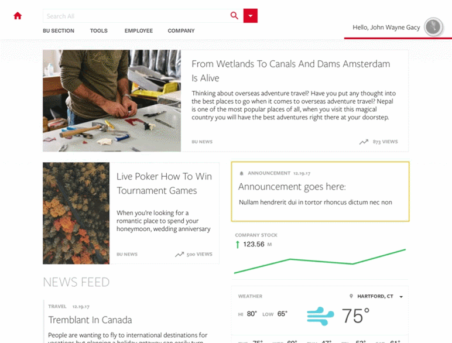

Empowering the employees through design
Redesign an intranet that keeps employees engaged, delighted, and informed.
03 Sprint Phases
We first conducted interviews to understand what teams needed to be successful. Then we synthesized the data and research. At the end we handed off an interactive prototype and a style guide for their newly designed intranet.
03 Client Checkpoints
First onsite meeting with the stakeholders was to measure their expectations and understand what they thought the needed from this effort. Second was a workshop to determine the minimum viable prototype and gauge the level of effort. Third was delivery.
02 Deliverables
An interactive prototype coupled with user journeys helped illustrate to the stakeholders our research findings and suggestions for their new intranet.
I designed a style guide that recommended the basics for their design such as grid, components, page layouts, and measurement sets.
Employee Interviews
We asked employees about their experience using the intranet; what they used it for, how they used it, frequency of use, what they thought it did well, and what they thought could improve. We included questions about workarounds they used to make their job easier, what applications they use professionally and personally, and their expectations.
Research Synthesis
After the interviews we affinitized key findings from our research to create insights and find pain points we could base our user journeys and personas off of. We created three personas and user journeys that represented the needs we found to be pain points from our interviews.
Moodboards + Wireframes
Based off of the information we got from the interviews, I designed three options for moodboards which the client selected their preferred design which I then used that for the look and feel of the prototype.
From the pain points, user journeys, and personas we outlined the features that would make up our minimum viable prototype that demonstrated the ‘phase 0’ for the client to implement with their team of engineers.
Their old intranet had limited functionality which lead to people using external applications to do their job quicker and easier. With these limitations in mind we addressed three main pain points in our redesign:
Team Collaboration
To give power back to the employees it was table stakes for us to provide them the ability to search for their coworkers, share content easily, and join groups.
Contextual Information
We designed the search to have robust capabilities that users could filter the results based off of parameters such as file type, business units, people, locations, etc.
Delight for the Employee
A lot of employees work with coworkers that they’ve never met. We included the users to upload avatars as well as personal information the provide a level of personalization. This information would also help to determine the content that their homepage would present.
Interactive Prototype
We built an interactive prototype that we could click through. There were three sections relating each to a user journey that had a persona who experienced a set of pain points. The research that we had compiled was included with the user journeys to help provide more context and reasoning for future reference.
Style Guide
I designed a style guide that outlined the basic structure of the new intranet design. I had a check in before the final deliverable with the customer’s engineering team to ensure I was providing them with the specifications they needed to build successfully and with ease. The style guide covered items such as unit measurements, grid systems, typography, component parts, pages, red lining, etc.
Research Readout
We put together an exhaustive deck of the research and recorded activities results such as the level of effort mapping and stakeholder expectations. This document served as a centralized location for all of the deliverables and information we generated throughout the project.